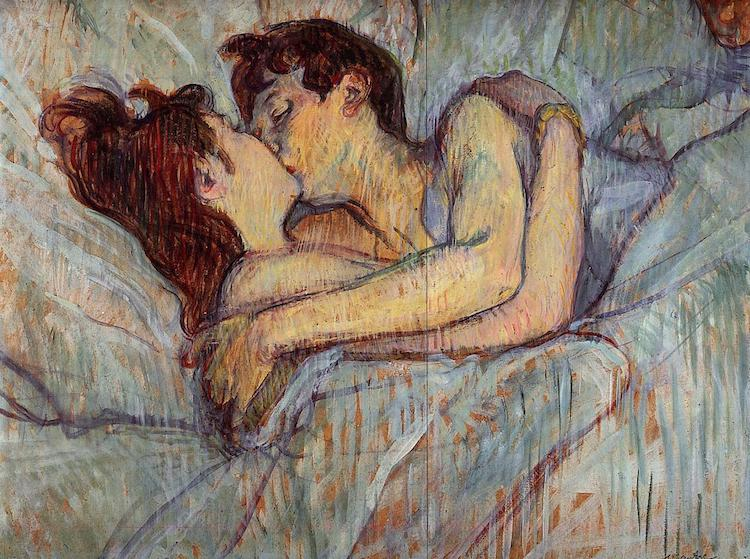

PASSION SERIES
Rembrant van Rijn
Rembrandt van Rijn, in full Rembrandt Harmenszoon van Rijn, Rembrandt originally spelled Rembrant, (born July 15, 1606, Leiden, Netherlands—died October 4, 1669, Amsterdam), Dutch Baroque painter and printmaker, one of the greatest storytellers in the history of art, possessing an exceptional ability to render people in their various moods and dramatic guises. Rembrandt is also known as a painter of light and shade and as an artist who favoured an uncompromising realism that would lead some critics to claim that he preferred ugliness to beauty.
THE KISS
Gustav Klimt
Gustav Klimt, (born July 14, 1862, Vienna, Austria—died February 6, 1918, Vienna), Austrian painter, founder of the school of painting known as the Vienna Sezession.
FIRST LOVE LAST LOVE
Brugge Studio
Svein Koningen (born 1946) is an abstract expressionist painter born in Trondheim Norway, childhood in Amsterdam, education in Australia, lives and works in Bruges, Belgium.
PASSION OVERVIEW
Peter Gabriel and Julian Grater
About Céline Marco
I paint my emotions... I am a french artist who is passionate about Art Deco, arts and crafts, paintings of animals, sculpture, ceramic, history of art... I am also a collector and a true admirer of talented people. The artistic creation has always been important in my life but after my doctorate of sociology, I felt the need to create my own artistic universe. Painting is, for me, a necessity where I find my equilibrium and an infinite pleasure; each painting is like a new story. When I paint, I let my imagination to take the power. I think that a good day is a day where I paint or draw. The color and the brightness are essential in my work but I find my inspiration in the beauty and the mystery of nature. I try to retranscribe all these wonders and this poetry in my art even if I like losing myself in abstract landscapes. It is my wish to keep forever my curiosity and my enthusiasm
PASSION,ABSTRACT
Jaison Cianelli
Jaison Cianelli is a self-taught American artist with a passion for expression. At the heart of his work is a desire to express his joy of life with others. Jaison specializes in abstract energy art and abstract landscape paintings using acrylic paint, mixed media, as well as a digital medium. His abstract paintings are an expression of uplifting energies created with a connection of nature and spirit in mind. They are the result of exploration and enjoying the process of intuitive creation and connecting with the moment.

IN BED,THE KISS
Henri de Toulouse-Lautrec
Henri de Toulouse-Lautrec, in full Henri-Marie-Raymonde de Toulouse-Lautrec-Monfa, (born November 24, 1864, Albi, France—died September 9, 1901, Malromé), French artist who observed and documented with great psychological insight the personalities and facets of Parisian nightlife and the French world of entertainment in the 1890s. His use of free-flowing, expressive line, often becoming pure arabesque, resulted in highly rhythmical compositions (e.g., In the Circus Fernando: The Ringmaster, 1888).